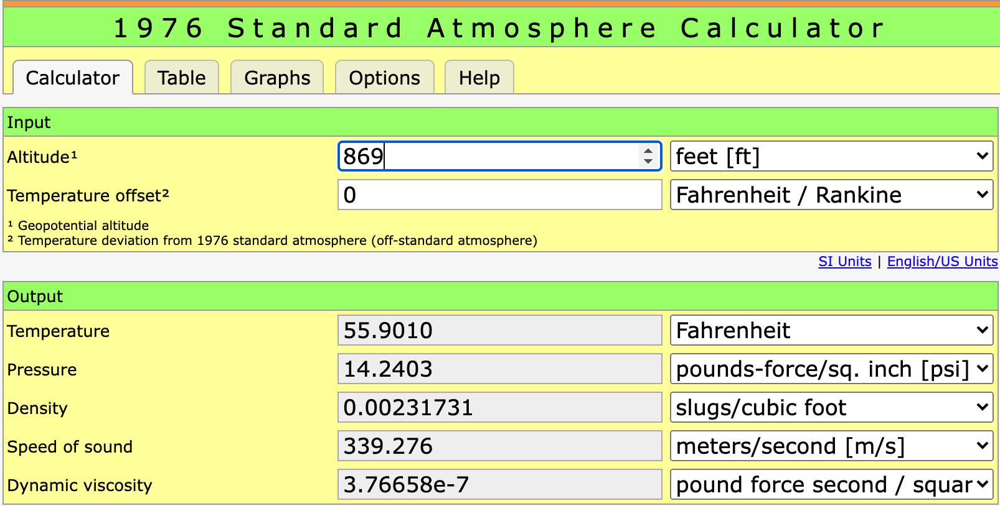

Atmospheric Data
Atmospheric Data¶
Obviously, our models fly through the air. Computational Fluid Dynamics studies the motion of a fluid using computers. Air is a fluid, even it that is not obvious. It is just a very thin fluid and we need to know a few fundamental properties of that fluid to do much interesting work.
Rather than rely on local measurements of the properties of air, most researchers use a model atmosphere so they can compare results. We will use data from the 1976 Standard Atmospheric Model, which you can find at the Standard Atmosphere Calculator. The website at that link lets you set your elevation and it presents you with standard values for the important properties we will need.

Notice something important here. Each property has units attached, and it is vital that you make sure your units are set correctly if you are to trust your answers in a computer generated result. The standard model has a mathematical basis, but since the study of the atmosphere is a common research task, these are several Python packages that already know all about this. We will use the fluids package in this study.
The fluids code expects inut values in Standard International Units (SI). I Since we are working with pint variables in our work, we will create a simple functin that returns the air properties we need, with proper units attached! The function will take the altitude as a parameter, and return a Python dictionary with these properties:
Temperature
Pressure
Density
Dynamic Viscosity
import pint
u = pint.UnitRegistry()
from fluids import ATMOSPHERE_1976 as StdAtm
def get_air_properties(altitude):
h = altitude.to_base_units()
sa = StdAtm(h.magnitude) # strip off units for call
result = {
'T': sa.T * u.kelvin,
'P': sa.P * u.pascals,
'rho': sa.rho * u.kg / u.m ** 3,
'mu': sa.mu * u.pascals * u.second
}
return result
---------------------------------------------------------------------------
ModuleNotFoundError Traceback (most recent call last)
/var/folders/t9/hc5s57h95tj3rsp4qvk61m8m0000gn/T/ipykernel_38120/560333839.py in <module>
2 u = pint.UnitRegistry()
3
----> 4 from fluids import ATMOSPHERE_1976 as StdAtm
5
6 def get_air_properties(altitude):
ModuleNotFoundError: No module named 'fluids'
Let’s check the values for th elevation of our local flying site (876 feet):
elevation = 876 * u.ft
kc = get_air_properties(elevation)
for key in kc:
print(key,kc[key])
T 286.4145416948804 kelvin
P 98158.40806685877 pascal
rho 1.1939062985385254 kilogram / meter ** 3
mu 1.780994347002584e-05 pascal * second
These values do not exactly match the web calculator values, but they are close enough for our purposes.
from pathlib import Path
root = Path().cwd()
ddir = root.parent.parent.parent / 'mmflight'
import sys
print(ddir)
sys.path.insert(0,ddir)
/Users/rblack/_dev/nffs-symposium/live-2022/mmflight
print(ddir)
/Users/rblack/_dev/nffs-symposium/live-2022/mmflight
print(dir())
['In', 'Out', 'Path', 'PurePath', 'PurePosixPath', 'StdAtm', '_', '__', '___', '__builtin__', '__builtins__', '__doc__', '__loader__', '__name__', '__package__', '__spec__', '_dh', '_exit_code', '_i', '_i1', '_i10', '_i11', '_i12', '_i13', '_i14', '_i15', '_i16', '_i17', '_i18', '_i19', '_i2', '_i20', '_i21', '_i22', '_i23', '_i24', '_i25', '_i26', '_i27', '_i28', '_i29', '_i3', '_i30', '_i31', '_i32', '_i33', '_i34', '_i35', '_i36', '_i37', '_i38', '_i39', '_i4', '_i40', '_i41', '_i42', '_i43', '_i44', '_i45', '_i46', '_i47', '_i48', '_i49', '_i5', '_i50', '_i51', '_i52', '_i53', '_i54', '_i55', '_i56', '_i57', '_i58', '_i59', '_i6', '_i60', '_i61', '_i62', '_i63', '_i64', '_i65', '_i66', '_i67', '_i68', '_i69', '_i7', '_i70', '_i71', '_i72', '_i73', '_i74', '_i75', '_i76', '_i77', '_i8', '_i9', '_ih', '_ii', '_iii', '_oh', 'airfoil', 'arc3', 'ddir', 'droot', 'elevation', 'exit', 'get_air_properties', 'get_ipython', 'importlib', 'kc', 'key', 'mmflight', 'name', 'p', 'pint', 'quit', 'root', 'sys', 'u', 'x']
airfoil = 'arc3'
p = f'from mmflight.data.airfoils.{airfoil}.CL import x'
import importlib
a = 'arc3'
m = importlib.import_module(f'mmflight.data.airfoils.{a}')
print(m.CL.x)
[-4.579439252336446, -3.8317757009345783, -3.084112149532709, -2.33644859813084, -1.5887850467289706, -0.8411214953271013, 0.6542056074766371, 1.4018691588785046, 2.149532710280374, 2.8971962616822413, 3.6448598130841123, 4.392523364485983, 5.140186915887851, 5.887850467289718, 6.635514018691589, 7.383177570093457, 8.130841121495324, 8.878504672897195, 9.719626168224297, 10.373831775700934, 11.121495327102801, 11.869158878504672, 12.710280373831774, 13.364485981308407, 14.205607476635512, 14.95327102803738, 15.70093457943925, 16.355140186915882, 17.102803738317753, 17.850467289719624, 18.691588785046726, 20.186915887850468, 20.93457943925233, 21.588785046728972]
print(x)
[-4.579439252336446, -3.8317757009345783, -3.084112149532709, -2.33644859813084, -1.5887850467289706, -0.8411214953271013, 0.6542056074766371, 1.4018691588785046, 2.149532710280374, 2.8971962616822413, 3.6448598130841123, 4.392523364485983, 5.140186915887851, 5.887850467289718, 6.635514018691589, 7.383177570093457, 8.130841121495324, 8.878504672897195, 9.719626168224297, 10.373831775700934, 11.121495327102801, 11.869158878504672, 12.710280373831774, 13.364485981308407, 14.205607476635512, 14.95327102803738, 15.70093457943925, 16.355140186915882, 17.102803738317753, 17.850467289719624, 18.691588785046726, 20.186915887850468, 20.93457943925233, 21.588785046728972]